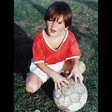

Lionel Messi
Biografia
Lionel Andrés Messi nació el 24 de junio de 1987 en el Hospital Italiano Garibaldi de la ciudad de Rosario, en la provincia de Santa Fe. Es el tercer hijo de Jorge Horacio Messi y Celia María Cuccittini. Tiene dos hermanos mayores, Rodrigo y Matías, y una hermana menor, María Sol. Su familia paterna es originaria del municipio italiano de Recanati, de donde su bisabuelo, Angelo Messi, emigró a Argentina en 1883. Fue su abuela materna, Celia, la que lo alentó a dedicarse al fútbol y a quien él agradece tras convertir un gol, señalando al cielo con las dos manos. Dos de sus primos (Maximiliano y Emanuel Biancucchi) son también futbolistas. Estudió en la escuela primaria N° 66 "Gral. Las Heras". Con apenas cuatro años, comenzó a practicar fútbol en el club Abanderado Grandoli, ubicado al sur de Rosario, en el barrio Grandoli, a pocas cuadras de su casa. Su primer entrenador fue Salvador Aparicio. En 1994, comenzó a entrenarse en las divisiones inferiores de Newell's Old Boys. A la edad de ocho años, le fue diagnosticada una deficiencia de la hormona de crecimiento. Durante un año y medio, el tratamiento, de 900 dólares mensuales, lo cubrieron su obra social y Acindar, siderúrgica en la que trabajaba su padre.
Premios
- Bota de Oro
- Trofeo Pichcichi
- Jugador Mundial de la FIFA
- Premio World Soccer al mejor jugador del mundo
- Dream Team del Balon de Oro
- Premio The Best al Mejor Jugador de la FIFA
- FIFA Balon de Oro
- Balon de Oro
- Premio UEFA al Mejor Jugador en Europa
- Premio Golden Boy
- FIFA/FIFPro World XI
- FIFA World Cup Golden Ball
- UEFA Champions League Top Goalscorer
- Premio Laureus al Mejor Deportista Maculino
- UEFA Club Footballer of the Year
- Creu de Sant Jordi
- Trofeo Bravo
- Trofeo Alfredo Di Stefano